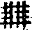

三峰藏和尚語錄卷第二
住蘇州鄧尉山聖恩禪寺語
己巳結夏熊邑侯魚山同闔郡紳衿請上堂豎起拂子云三世諸佛歷代祖師山河大地世出世間一切諸法縛作一團千牢百固擲向諸仁面前還有決烈漢一擊粉碎者麼問昔年萬峰于此大轉法輪今日三峰到來祖道重光未審唱誰家曲調師云龍碑鍾王氣進云恁麼則臨濟中興雷轟電掣去也師云鳳嶺蔚青霞僧作禮師便打問威音王佛一金圈拋向當陽事若何師云湖洗千秋日進云得意忘言即不問橫三豎四是何宗師云山擎萬古天僧擬進語師喝住良久乃左右顧視云諸佛未出世祖師未西來威音王未有名字以前還有生死也無各人父母未生三緣未合天地未分覺明未咎以前還有四句兩頭是非好歹言思識路也無昨宵正睡著時無夢無想無見無聞還有現前許多理會也無若向這裏了得則知從朝睡醒下床洗面喫粥迎賓送客嬉笑怒罵是有心耶是無心耶若道有心則前來三處心不是有若道無心則現前是誰主持若向這裏透過則山出波中樹撐殿角正好搖扇乘涼過夏雖然如是猶坐無事甲裏若有一物現前未免心生意解情塵亙天顧杼停機生死塞路如何得大休歇大自在若是個不顧危亡底向未問以前劈口一槌板齒落地眉間掛劍血濺梵天饑鷹爪上奪雀猛虎口裏下鍼始契他臨濟大師道一句中具三玄門一玄中具三要額上亞目頂中出頭處處超佛越祖在在蓋色騎聲堪報不報之恩共助無為之化喝一喝卓拄杖下座。
法堂落成上堂以拂子畫一畫云會麼太陽到向諸神藏沒赤口白舌盡消除又畫一畫云會麼普庵到此百無禁忌九良星煞沒坐位諸仁者前一畫後一畫畫畫相對四柱卓雲諸磉立地臨濟宗旨盡情說了也還有向上事麼又畫一畫云不因跨海擎天勢爭見千秋柱石功。
上堂雲無心而出岫招招搖搖鳥倦飛以知還歷歷落落堪笑陶淵明舍重卻從輕有五斗米腰不肯折無一盃酒眉便解攢阿呵呵廉亦不必廉貪亦不必貪但除心裏病到處腳頭寬。
上堂朕兆未形已前切忌守著自己形名既分之後要須打破目前大象不遊兔徑鳳凰肯啗雞粟祖師門下電光莫及石火難追喝一喝云說萬峰以強欺弱得麼便下座。
上堂擉瞎娘生眸劈開覷驢井任他驢事馬事不管生耶死耶至若拈赤生銕補鍋飛[車*度]轢鑽釘縫不過事存函蓋理應箭鋒也不是驚天動地底事何故聻兩手捧缽雙足結跏誰家沙彌非佛祖一身帶影四體承月那個男兒不丈夫遂卓拄杖下座。
上堂以口說法口有時歇以身說法身有時滅拈起拄杖云秖有這個菩薩生辣辣一例橫該抹不管你眼裏無筋秪要你皮下有血。
上堂老僧有時將太虛空千煆萬煉煉成一柄金剛王劍揮天截地有時放下寶劍偪塞虛空令三世諸佛歷代祖師無出頭分有時捲盡白雲歸洞府轟雷暴雨過黃昏所以道有句無句如藤倚樹雖然切忌問著問著則頭角生。
小參沉空滯寂齷齷齪齪混世同塵潔潔淨淨長者長法身短者短法身月大大盡月小小盡狸奴白牯卻知三世諸佛不省要得四海平定喝一喝云急急如律令。
上堂本來無一物教外有何傳幾多英靈子紙裹又麻纏天台南嶽奔如電河北江南走似煙漆桶漆桶蒼天蒼天狼藉不止東土淆訛始自西乾。
女弟子上蓮修淨業請小參口口佛心心佛事事佛步步佛一撞一磕都是佛忽然撞著石大郎口中吐出蓮花碧。
上堂拈起拄杖云看看十五日已前日月未足喻其明十五日已後虛空未足喻其廣正當十五日有高逾泰華深越滄海一句子擬舉似諸人未免道欺人太煞有信得及者出來兩手分付僧纔出作禮師劈脊一棒云且道一半僧進前云乞和尚全副道將來師擲下拄杖云要頭截取去僧擬議師托開云是甚麼乾矢橛便下座。
上堂冒虛空為鼓懸日月為槌打鼓普請鄧山五百木羅漢夯取柴庄嶺上薪蒸得米囤峰頭粟將漁洋缽盂山滿盛香積憑鄧山翀天飛鳳和聲念摩訶般若三世諸佛如麻似粟虛空中懽喜合掌惟有普賢長子騎卻竹山臥象峰為作證明曰若人會得這一句子管取參學事畢便下座。
上堂有句無句如藤倚樹不參活句參死句豈止蹉過河沙數樹倒藤枯句歸何處大地山河生銕鑄千人萬人把不住溈山呵呵大笑歸方丈迢迢相望八千里往復何嘗行舊路喝一喝云此是圓通自在門萬峰不須重指注。
小參臨濟只為髑髏乾不盡長年無風生浪德山多因塊壘未全銷一向平地起堆萬峰一串穿來掛向八風頭裏任他事逐眼前過管甚老從頭上來。
庚午元旦上堂拈起瓶中花云拈花嵩祝願唯欽春到方知聖主心出世豈忘歌帝力捷音且喜到山深兵揚北闕彌天壯寇敗西山指日擒欲把金剛王一拂為皇千載靖氛祲舉臨濟大師曰有時一喝如金剛王寶劍師云魔佛同誅有時一喝如踞地師子師云空礙俱破有時一喝如探竿影草師云烽煙未動砲已先行有時一喝不作一喝用師云擊鼓三通強凶授首今日元正新旦只見殺氣騰騰雖然正是我大明國裏春風習習還有會一喝金剛王者麼道道僧纔出師云禮拜當朝北闕便下座。
上堂日日日東出日日日西沉是聖是凡劈脊摟那管一棒一條痕空劫已前無自己眼目人天是甚麼人上上上上到最高高處望望見青山起白雲。
上堂曉色煙為山夜光月成雪不知萬谷梅秪覺香鏤骨高風過疾雷空芬轉幽烈問我西來意早已為君說良久云向上一路千聖不傳未入門來早已三十棒了也。
上堂築墻護果鑿地蒔花钁嘴廉尖石頭磊塊客來迎送米到抬扛愁醬乞鹽吟風弄月此是住山活計久參上士不消重說偈言後學初機領取向下注腳乃云重湖疊嶂梅千頃塌屋低簷四五家未坼竹根先掘筍略虛樹罅又栽茶便下座。
上堂如何是佛虛空一具黃金骨如何是法水清石冷苔長滑如何是僧眉長拖地骨如冰如何是三寶具足古殿法堂方丈屋如何是其中事日上芋香猶未熟廚下先烹一盞茶還有受用也無白雲為床梧葉為屋睡熟翻身水足草足恁麼則如何為人聻相逢不道人間事指點湖山個個青老僧恁麼自問自荅拄杖子恁麼自問自荅大眾亦恁麼自問自荅拄杖子若會得則老僧會得大眾會得大眾若不會則拄杖子不會老僧不會今問拄杖子還會麼良久山鳥亂啼乃云分明是個事山鳥正啼忙。
上堂老僧近來枕石放身瞑然松下不能說法無已則委之萬象將使雲霞絢赫水石擊衝露遮那身出廣長舌曰的地藍曰阿布使曰四月乍晴山色好一天初曉鳥聲多此等皆非一代時教之所管攝今日十方為口山說水說空說有說剎說塵說有情無情三世一切同運法輪令聞者令見者立地成佛且道如上說底是甚麼法良久乃云湖上缽盂峰乍洗峰頭囤米飯初蒸。
上堂摩訶衍法四句既離百非又絕空蕩蕩三千剎海冷澄澄八萬法門美則美矣猶未盡善何也不能傾出猛烈紅爐燄鎚碎清涼白月輪李將軍有家聲在不得封侯也是閑諸人要識三峰真的旨麼喝一喝云威風八面言思斷平地翻為荊棘林。
結夏上堂筍出林梢竹乍齊青梅初重壓枝低山知雨好頻增色鳥惜花殘不住啼衲裰卷來雲在架革鞋懸後草成蹊湖光近檻閑無用洗盡晴霞日落西隨顧左右云會麼若作結夏佛法會入地獄如箭射不作結夏佛法會亦須銜銕負鞍。
上堂舉六祖至廣州法性寺寓止廊廡間暮夜風颺剎幡聞二僧對論一云幡動一云風動往復酬畣曾未契理祖云可容俗流輒與高論否直以非風幡動仁者心動師云弄泥團漢有甚麼限滿缽炒浮漚擎來充供養影響盡消亡心作底模樣。
上堂僧問露柱掛燈籠山門騎佛殿神通法爾則且置如何得穩坐家堂師云山僧無伎倆僧云和尚莫謾某甲師云白日青天鬼美人又僧問趙州喫茶去不是好心和尚開堂來的何宗旨師云掌上星初滿僧云恁麼則為瑞為祥去也師云盤中月正孤僧禮拜師便喝乃云山僧無伎倆一步是一步看他一輩茄子瓠子不思爛貨沒人買偏要擔向十字街頭爭鮮鬥價白日青天鬼美人真個苦哉佛陀耶山僧今日正擬移風易俗要使動者靜亂者定邪者正以拂子左拂云唵部臨部臨以拂子右拂云唵齒臨齒臨伏願風以時而雨以時漁父歌而樵人舞直得皇封坦蕩化日熙怡無一物不遂其生無一法不安其性且道山僧憑何力用致斯盛治乃復以拂子作一圓相托呈云見麼掌上星初滿盤中月正孤。
上堂纔問著舌初掉大洋海底火星飛赤日頭邊急流瀑白花牛穿破粉底皂靴青頭蠅不肯揚聲大叫丘八王趙五到敲金章打玉詔桃花妒眼能相撩此是老僧向來不曾道底若會得出來下個註腳僧纔出師便下座回至方丈侍者出云請和尚註腳師云鄭龍苦雨章海酸雲進云雲收雨霽後又如何師云落長七生。
上堂舉五祖演和尚云釋迦已滅彌勒未生森羅萬象推向一邊且作麼生是你諸人嘗住法身乃云有功無功莫使腹空師云五祖老漢顢顢頇頇儱儱侗侗更參三十年也未會法身向上在然雖如是土曠人希試聽下個註腳喝一喝云夏日赫如烈流汗思冷泉偶爾得一句大雪下長天。
病起上堂山僧前日通身是病晝夜攢簇不得何啻四百四病正當病時病亦是病藥亦是病那知更有個不病者及至病退身安從前寒熱眾苦相貌總不知向甚處去也三百骨節八萬毛竅一一抖得乾乾淨淨遍覓病源了不可得始信這髑髏皮袋裏面直是安置伊不得病與不病是甚麼閑大眾秖是一個身子且道因甚有兩樣喝一喝云夜冢髑髏原是水客盃弓影竟非蛇個中無地容生滅笑把遺編篆縷斜。
晚參古人真實相為道有念盡為煩惱鎖無心端坐水晶宮我卻不恁麼喝一喝云幽花自戀秋深草脫葉誰知樹底雲下座。
上堂釋迦墮七墮八達磨落二落三托言為道為法實情翫水遊山拉下禪床問你南北東西討甚閑秋風涼秋夜長井梧飄嵒桂香初無蓋覆有甚囊藏但不許世諦流布且不容佛法商量擲下拄杖云逴得便行真漢子人間天上本無雙。
上堂一立一破猶有塵在無立無破猶有法在塵法雙亡猶有亡在老僧一棒到底使你冰消桶脫你莫非又向冰消桶脫處躲跟麼拈拄杖云一頓兩頓三四頓一一會來真是鈍棒頭有眼為君分腦後雙眸何足問直打下法堂。
上堂僧纔出師驀頭與一踏僧起身云好一踏師云你從甚處來僧擬議師又與一踏云自己來處尚不知也要說好說歉乃云山僧今日不能與這僧斬絕未免勞而無功還有赤心片片底衲子與老僧倒斷不致兩相辜負良久云這一踏非惟踏破釋迦腦蓋抑且為千古龜鑑。
上堂喝一喝云螻蟻馳上泰山鬧斷日觀峰頭巨石蟪蛄奮出滄海噓成羅浮頂上白雲人人有這自力卻不用倒借別人底手拭涕可惜許也豈不見長橋下蛟只消一劍藍田中虎不出一箭直下便請何等快便大丈夫阿呵呵踏踏歌藍采和不若十字街頭布袋和尚把木屐拖觀世音菩薩將錢買胡餅放下手卻是饅頭雲門大師來也諸人還會得門縫裏事麼喝一喝云今日三七大悲懺壇完滿掃萬峰祖塔山頭掛百燭燈湖上點通宵炬設放燄口施食普利水陸莫言不道。
淨心居士請上堂生平篤信是參禪琴上相看二十年施地但知開剎願食貧未惜買山錢清涼夢繞藤為座鄧尉身空水是天三日耳聾君會取馬師道法廣無邊良久喝一喝云若還與麼會難免叫蒼天。
上堂嶒峰無磴海無舟率意驅車痛哭休從此頹然坐芳草問來伸手折花酬。
上堂一棒一條痕一摑一握血到底一重關人人盡叫屈屈屈透過兩三重敢保老兄猶未徹。
辛未元日上堂拈香畢乃就座云風不鳴條雨不破塊民不失所路不拾遺承誰恩力當今皇帝復顧視左右云且知恩報恩一句又作麼生良久云虛空開口呵呵笑佛法從來貴出情。
上堂以拄杖畫一畫云若人會得這一畫則能攪長河為酥酪變大地作黃金世出世間山河大地無一針鋒許不是棒頭的旨又以杖畫一畫云若人會得這一畫則黃金變酥酪世界為白銀世出世間無針鋒許不是大休大歇大安樂處復以杖畫一畫云若人會得這一畫則黃金酥酪酥酪黃金鍊作一團打作一片世出世間無一針鋒許不是大尊貴處諸仁者還會也無會也不出此不會也不出此以杖卓三卓云移花兼彩蝶買銕得黃金。
上堂數萬先須舉一二五恰成一十數到不可說處舌大如槌神機活脫蟠桃一夜盡開花歲歷三千始成實諸仁者萬出于千千起于百百始于十十始于一只這一又從那裏起良久云剝到頂時培碩果雷從復處震天機乃喝一喝云諸仁者這一喝有時作一喝用有時不作一喝用有時一喝不作一喝用若人會得管取參學事畢會麼王師合藉干城力四海歸降賀太平。
李侍御請上堂有言無意號離鉤拋出先天紫氣浮泰華擘開輕有力黃河畫斷水西流若人會得這一句則手握乾坤指呼日月先天地而不生後天地而不老亙古亙今只是個自己諸人還道得麼不然老僧自道去也今朝二月廿四飯僧作大佛事策起三丈白眉直下為君指示乃揮拂大喝下座。
上堂喝一喝云特牛生兒也又喝一喝云一馬生三寅又喝一喝云此中一句能令山河大地草木風雲情與無情一時轉大法輪成等正覺諸人要會麼復喝一喝云向這裏入問[祝/土]肋三拳佛降生指天指地令全行父子傳燈光燦爛請師的的示分明師以杖畫進云啐啄頓開天地竅鸞雛衝破碧琉璃師以杖于前相外畫一大○進云父子合宗千古印燈燈續燄古今傳師以杖于一○中點云呱僧作禮師便下座。
通州弟子濟聞請上堂諸上座不用尋思盡十方世界明明地無一塵一縷為緣為對咳唾超彼三賢掉臂直透十聖著衣喫飯行住坐臥有甚麼事不見永嘉云絕學無為閑道人不除妄想不求真秪恁麼散去佛法道理一總用不著可笑德山緣密有甚三句語示人一句函蓋乾坤一句截斷眾流一句隨波逐浪長安路上得恁麼滾滾地。
上堂五十五位盡是度門從門入作好不丈夫若是真正英雄爭肯踏佛階梯落人背後諸人清淨心中若起一念修學心即是平地上立個階級不可度越汝若無心即是步步通途說甚麼遠近高卑良久云會麼分別魔軍熾忘機佛道隆。
晚參僧問不與萬法為侶者是甚麼人師云老僧遭你鈍置僧云一口吸盡西江水又作麼生師云闍黎遭我鈍置僧一喝師擲下拄杖云為他閑事長無明便下座。
上堂問闢天人深域一往已見全提振今古洪謨此時願垂一語師云莫道點頭猶未是纖毫不了亂縱橫進云金毛師子相逢也未必輕輕放過伊師云行腳若還不帶眼難免海外覓浮漚僧點頭三下師云果然地闊少知音問諸法寂滅相不可以言宣三藏十二部所說何事師云不錯進云大用現前不存規則因甚又道演唱宗乘須具三玄三要師云不錯進云威音王已前是甚麼人先悟師云人事少暇緩緩和你商量前兩錯進云和尚也須領話師云一期畣話還副得上座意麼僧云不副師顧左右云這回老僧得也便下座。
上堂古人住山嘗有偈云釅茶三五盞意在钁頭邊且道是甚麼意老僧則不然蠶豆茶邊採西瓜竹裏栽鋤成生熟地一月兩番開今古同風宛有住山氣象若是真獅子兒不妨向這邊跳躑所謂獅子兒眾隨後三歲便能大哮吼諸仁者簑衣索索官人不落三耳朵草鞋放在禪床腳下省得諸方亂走行腳還有真正赤骨律住山漢子出來道看良久云開田儲夏水種樹埡春雲。
上堂舉睦州和尚云汝等諸人還得個入頭處也未若未得個入頭須得個入頭若得個入頭不得孤負老僧師云賺臨濟喫棒拶雲門腳折底本事甚處去也反自出出入入兩頭三緒教壞人家兒女萬峰若不徹底掀翻使彼承言滯句者一個個李向赤邊咬埋沒己靈深為可惜眾中還有捉敗睦州底衲子麼老僧肯相孤負拈拄杖卓一下云要用直須用眼目莫定動。
晚參德山小參不畣話埋沒宗風趙州小參要畣話恥他先作萬峰今夜小參會得自己底截斷他腳跟識得目前底穿瞎他眼睛起佛見法見底與他茶喫不見一色底與他平交不是山僧爭人我大都緇素要分明且道總不與麼底又如何良久云後五日看。
上堂秋山乾若洗秋水流如砥秋雲淡不生七十二峰起所以鄧尉山與光福塔首尾問畣致令漁洋山囓指出血長旗嶺叩首皈依何以故以拄杖畫一畫云班鳩麻雀大於鵬白象青獅小如蟻又畫一畫云會麼杖頭花正深爭奈草鞋有鼻而無跟東邊撞木鐘西邊敲瓦鼓齊一變至於魯山僧二十餘年一向打葛藤從未曾說到這裏今日不覺盡情嘔出良久云若將耳聽終難會眼處聞聲始得知。
受揚州天寧請上堂向上大法不惜當陽拈示諸仁者從維揚放舟截江到鄧山三日寒雨一道清風及乎到來舟懸石岸斜轎上泥坡滑登涉間關參尋不易伏惟珍重至若向下一句則未踏船舷早已說過了也且道還有末後句也無十月多風信難為衣薄人會得者出來唱和一上問適纔和尚道未踏船舷早已說過了也說底是甚麼師打云說這個進云未在更道師云你又作麼生僧云未陞座已前和尚已喫三十棒了也師打云這一棒阿誰喫僧一喝拂袖歸眾問和尚道風遠振法雨均施今日覿面當機未審如何相接師打云這樣接進云還肯別施方便接彼遠來者麼師云肯進云如何是和尚底方便師云向下會取進云設有個金睛突出頭尾交加大吼一聲和尚又作麼生師作虎聲僧云今日長安大有人喪身失命師打云這一棒阿誰喫人華居士問聞和尚於此建立臨濟宗旨是否師云是進云臨濟宗旨且置如何是萬峰宗旨師云塔院到此不出半里進云三百年來今日始見作家師打云這一棒教阿誰喫又僧出問向上向下則不問如何是末後句師覤上覷下進云為甚解舉不解荅師吐舌僧禮拜云今日被學人捉敗師打云這一棒教阿誰喫便歸方丈。
上堂天上水地下月萬斛天香好時節無數青蒼淡中抹洞庭兩山飛彈出打破佛頭頂上結商山四皓齊喫跌個個兩口無一舌三段老人雪竇翁老僧一棒下風立中郎兒孫賢叔侄被我一問赤骨律南斗八北斗七二十八宿右旋列咄我要問他今年洞庭多少橘畣得出與一摑畣不出與一摑道道良久喝一喝下座。
壬申元日上堂拈起拄杖云世界闊幾許拄杖闊幾許虛空長一丈拄杖長一丈百億蓮華九州萬國五湖四海一切諸佛含靈都在拄杖子頭上傳心續命被老僧輕輕點一下則虛空雷動大地春生澤國太平聖皇萬壽。
上堂以拄杖畫一畫云直截根源佛所印摘葉尋枝我不能且道如何是直截根源底印漁洋山曲缽盂小鄧尉峰高天壽深又以杖左右豎兩豎云種花嫌地瘦汲水問泉遙又以杖橫豎各數畫云幽花不待人清夜已開遍第一個字匾擔兩頭尖第二個字剎竿對面豎第三個字一堆亂木和雲貯若人識得這三個字則世出世間文字一時會盡無文字亦一時會盡佛祖大用俱已了盡豈但超生脫死而已諸仁者還會也無若不會參去。
上堂花放屋簷紅山家春信通急磨刪竹剪閑製焙茶籠逐鹿歸蕉北聽鶯過澗東只麼消遣日休問是何宗。
上堂古人道諸佛一向淨用故名諸佛眾生一向染用故名眾生師云諸佛空裏漚花眾生水中雲影衲僧門下染淨不收去來無礙語言動靜三藏絕詮瞬目揚眉乾坤失色用之則行舍之則藏彼彼丈夫兒肯甘自退屈隨喝一喝云大家究取。
通州諸居士送法被至請上堂以拂子指法被云諸仁者看取若論向上大事如吳門鍼工繡法被相似若於未剪羅段以前向頂門一鍼鮮血直迸忽地翻身作大哮吼頓使天魔外道一時粉骨碎身何等痛快其或未然不免更著精神裁成錦片上卻繃子於密不通風處朝也繡暮也繡要使鍼鍼相對線線相連無一絲毫縫罅一毛一毬無容少欠不知不覺爪牙畢具於繃子上突然跳出一個金毛獅子來便解開大口吐出五色上品蓮花花中顯現諸佛列祖一齊演說大法頓使四天王天勇力護持諸天天女空中散花供養一切天母各各掬香擎花然燈灑露獻果如山樂音齊響遂見須彌岌峇海水騰波天上天下若風若雷山林草木無有一物不出廣長舌相同說此法令聞者見者一時悟徹盡大地狐狼野干但聞哮吼之聲肝腦塗地永不復生從此正法光騰炤耀末世且道如何是獅子吼喏乃喝一喝卓拄杖下座。
上堂舉雪竇上堂云乾坤之內宇宙之間中有一寶掛在壁上達磨九年不敢覷著師喝一喝云推倒墻壁走卻達磨寶在甚麼處復顧左右云你看雪竇可是人養底。
上堂趙州一飽忘百饑今日老僧身便是橫鋪破席白晝眠起來不管天和地茲因山中絕糧適檀越送米至特請上堂記得年前小除夕一偈百僧饑看老僧關湖自清清嶺自彎廚火宿留無粲粟梅花愁絕滿空山今日復有一偈細雨梅花玉濕枝飽來不覺日長時三通法鼓上堂去說法何曾待所思只此二偈若人不會則說饑說飽說喜說怒便有無量生死如何超得若於此偈直下了卻古人所謂以手攀南極回身倚北辰舉頭天外看誰是我般人。
晚參僧問喚作竹篦則觸不喚作竹篦則背喚作甚麼師下禪床走兩步云莫怪老僧行步龍鍾僧云意旨如何師云水牯牛大底老虎也打得倒幾個僧不領師云向年撞個師僧來亦曾與麼直至而今總無消息良久顧左右云具足凡夫法凡夫不知具足聖人法聖人不會聖人若會即同凡夫凡夫若知即同聖人不消拈卻凡情聖見寒則普天匝地寒熱則普天匝地熱是法住法位世間相嘗住塵塵爾剎剎爾亙古亙今那怕甕中走鱉雖然如是因甚又往往干戈相待喝一喝云劍為不平離寶匣藥因救病出金瓶。
上堂未離兜率已降王宮未出母胎度人已畢拈起拄杖云這上座甚麼劫中成佛來僧出眾云容某甲說道理得麼師云大喻三千小喻八百秪要恰這上座意便了僧云拘留孫佛劫中某甲與這上座同參直至而今團不圓分不開無數知識出世例皆懡[怡-台+羅]放過和尚明鑑是神通是三昧師云眼若不睡諸夢自除僧掀倒几案師下座顧大眾云三峰今日死中得活便出堂。
小參溪聲憤怒雨如絲正是山中絕食時三陣普梆催接米炊煙依舊不曾遲還有終日喫飯不曾嚼著米底衲僧出來通個消息僧出問如何是祖師西來意師云爛熟黃梅落滿地僧云意旨如何師云解得調羹味便和一僧出云和尚師無語僧一喝便歸眾良久僧又出左右顧視師仍無語僧云滿堂師僧覓個畣話底不可得師云今日得一個也僧拂袖便出師云將謂是德山老漢原來不是便起身歸方丈前僧出作禮云適來觸忤和尚師擬拈棒僧又拂袖出對侍者云澤廣藏山理能伏豹是甚麼人語者擬議僧劈口一坐具云這棒合是老漢喫師召侍者云他道甚麼者擬舉前話師連棒打趁。
上堂問我老僧壽幾許只向道屋上青山庭下樹只此一句如金剛寶劍萬物攖之即失原來百味具足更無他事了也正如唐堯之世垂衣拱手真為上古之風奈何一句未分未免顢頇儱侗酷如洪水汎濫草木繁茂蛇龍為患虎兕逼人強梗未刪禮義未鑿五穀不登未盡其善所以臨濟老人于一句中分出玄要賓主等堂奧以至四賓主之主中主如大舜使五人為臣禹疏九河水入大海而天下燥使益掌火烈山澤而障翳銷驅龍蛇歸海逐虎豹入山然後誅四兇嗑強梗樹五穀教仁義洪荒闢而中原為寶地葆上古之真純為三代禮樂之祖究竟看來秪完得個無為之治而已今人畏臨濟入道之密制法之嚴便欲抹殺宗旨單行一棒此何異天惡其成地惡其平六府三事惡其允治畢竟要身著箬栗葉茹毛飲血為埜人之君老僧值禪運式微萬不得已提起三百年不講之絡索以捄法道中洪荒虎兕之敝還有同心共濟者麼卓拄杖下座。
石季玉送關帝像入山請上堂豎起拂子喝一喝良久云十年磨一劍霜刃未曾試今日持贈君誰有不平事喝一喝云此事直須全身鎧甲八面威風大刀飛一片冰花赤馬奮半空雲影於八萬四千魔軍堆裏馘其酋首猶如拾芥具如是操略正好干城正法震攝魔怨俾天下太平使蒼生安樂還有如是操略者麼出來道看僧纔出師便喝進云是何宗旨師又喝進云單刀直入一句作麼生道師以杖旋風打散大眾歸方丈。
上堂茫茫宇宙落落門庭前不見古人後不見來者據個曲彔木床日與山花水鳥閒訴衷腸崖瀑松風激揚宗旨汝諸人但只耳門有竅眼裏有筋物物頭頭何非己分以拄杖卓一下云收。
上堂唇封兩片皮齒鍵三條楔腦後拖舌頭吐出三丈銕一道寒芒射斗牛萬里長江兩岸雪不是不是一二三四五六七古人曰耳朵兩片皮牙齒一具骨美則美矣未有師在良久云如何是佛唐相細腰明儀隱骨如何是西來意三年載一船不是石頭定是土塊一年三百六十日有五時有九節有六運有七氣不是不是日日是好日以拄杖作釣魚勢云悠悠漁父詞嫋嫋千尺絲歸來每到月明時小小山矮矮屋厚厚茆茨寥寥黃犬吠花枝不是不是不關老僧之事會麼顧左右下座。
上堂平地上抬腳不起底千里同風眼光爍破四天下底對面不識信之則有不信則無先佛性命函蓋乾坤後佛紀綱眾流截斷汝等諸人從年頭至年尾觸境遇緣迎賓待客著著隨波逐浪德山圓密後生晚輩置之一傍自不怪你雲門大師氣宇如王在你腳底因甚不覺喝一喝云各各歸衣缽下究取。
上堂山貧每絕糧供眾無別物一碗菾菜湯百枚蠶豆莢中間咬得著兩頭清水滴等得一供齋預先支米喫添卻錢一千將就遣今日明朝說具戒未聞大檀越只有蘇二伯一金辦早食三百團圞頭心心肯相歇也有嫌單狹也有道屋窄入廁無遮蔽上殿怕腳濕聖恩老堂頭丁此好時節譬如歲儉家寒酸遣朝夕突然請上堂大法無得說盡將家藏寶傾囊都統出良久乃顧左右云山前山後幾百家家家看繭採新茶老僧住此貧徹骨嬴得年年看好花喝一喝下座。
上堂僧問山眉卓豎日面煇煌如何是無相法身師云求名雖有據學稼本無田僧云不因漁父爭識桃源師云一身依棹轉雙眼被花迷僧云原來只在這裏師云錯卻路頭乃云桃源原只在人間堪笑漁郎去不還貪著故鄉田地好回頭那覺鬢毛斑花灼爍水潺湲兩崖石壁故蒼然都緣熟路難忘卻斷送一生閒又閒。
上堂蘇州菱邵伯藕買賣經營隨處走從來主顧不擇人只貴有錢能出手以拄杖架肩云老僧擔一擔子來也足以填饑補渴厭飽諸人當場乞我一文不妨連籃折倒亦免得十字街頭喫筋乞力有麼有麼良久云眼看好貨無人買佳味于今只自知。
上堂深院桂花殘香風恣狼藉堪憐無目人猶向枝頭覓舉世笑他愚山僧道不必何也合眼避諸塵那怕黃金屑。
因事上堂僧問如何是萬峰境師云庭果色驕秋半雨田禾香落夜湥風如何是萬峰人師云從人笑罵任我縱橫人在境中境在人中師云開田說義家嘗話磊石為龕自在窩向上還有事也無師云一聲孤雁秋空遠無數亂峰寒日斜乃云千峰蒸寒碧生我一片秋逐逐任涼飆來往無依留有時落空谷心與松俱休有時乘殷雷赤日滂遠流或為石所破裂絮憐浮游平生得失心付之空悠悠而輩體所慕讚毀徒相投胡為戀戀情語此朝蜉蝣願言微雲根母道風颼飀。
三峰藏和尚語錄卷第二(終)